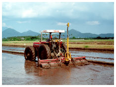

bigger
bigger reset
reset smaller
smallerAdmin logon
Benefits of Land leveling


Effective land leveling reduces the work in crop establishment and care, and increases yields. Level land improves water coverage that
-
reduces the amount of water required for land preparation
-
improves crop establishment and care
-
decreases the time to complete tasks
-
results in better crop stands
-
reduces weed problems
-
results in uniform crop maturity
Better leveling of land results in benefits to the farmer in yield, weed control, farm operation, seeding practices and efficiency of water use.
|
Uniform crop stand |
Uniform crop maturity |
Yield
Research has shown a large increase in rice yield due to good field leveling. The following table shows the results of land leveling experiments in Cambodia between 1996 and 1999.
| Year and operator | No. of fields | Rice yield (t/ha) | |
| Leveled fields | Unleveled fields | ||
| 1996 | 16 | 3.4 | 2.67 |
| 1997 | 14 | 2.27 | 1.46 |
| 1998 | 37 | 2.72 | 2.36 |
| 1999 CARDI | 35 | 2.34 | 2 |
| Average | 2.72 | 2.19 | |
Table 1. Results of land-leveling experiments conducted by CIAP in Cambodia, 1996-1999
The table of results, for the same rice varieties and the same fertilizer input, shows that the average increase in crop yield was 24% or 530 kilograms per hectare.
In two experiments conducted at different localities, a strong correlation was found between the levelness of the land and crop yield.
This correlation is show in the chart below:
Weed Control
Land leveling increases yield. A large part of this increase is due to improved weed control. Improved water coverage from better land leveling reduces weeds by up to 40%. This reduction in weeds results in less time for crop weeding. A reduction from 21 to 5 labor-days/ha is achieved. A reduction of up to 16 person-days per hectare – up to 75% decrease in
|
Weeds under water |
Close up of soil condition |
|
Complete eradication of weeds |
Close up of soil condition |
Farm Operation
Land leveling makes possible the use of larger fields. Larger fields increase the farming area and improve operational efficiency. Increasing field sizes from 0.1 hectare to 0.5 hectare increases the farming area by between 5% and 7%. This increase in farming area gives the farmer the option to reshape the farming area that can reduce operating times by 10% to 15%.
|  | |
|
Leveling using bucket leveler |
Puddling and leveling operation |
Seeding Practices
Leveling reduces the time taken for planting for transplanting and direct seeding. Land leveling provides greater opportunity to use direct seeding. The possible reduction in labor by changing from transplanting to direct seeding is approximately 30 person-days per hectare.
|
Broadcasted field |
Close-up view of broadcasted seeds |
Efficiency of Water Use
Rice farmers using animal or 2-wheel tractors rely on water to accumulate in the field before starting land preparation. The average difference in height between the highest and lowest portions of rice fields in Asia is 160mm. This means that in an unleveled field an extra 80mm to 100mm of water must be stored in the field to give complete water coverage. This is nearly an extra 10% of the total water requirement to grow the crop.
Land leveling effectively terraces fields allowing water in the higher fields to be used in the lower fields for land preparation and plant establishment.
|
Terraced field allows water flow from high to low field |
| < Prev | Next > |
|---|